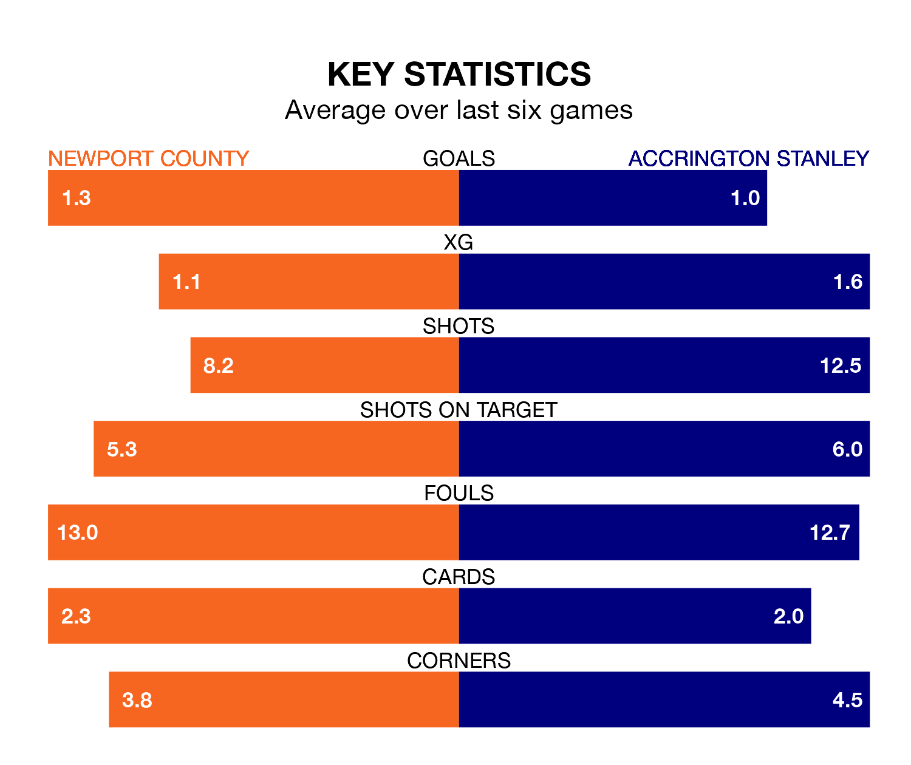

Newport County welcome Accrington Stanley to Rodney Parade on late Tuesday looking to pick up points to end their four-game losing streak.
Newport's struggles have left them with six points from their last six EFL League Two matches, while their opponents have earned five from a possible 18.
In the last 10 years, Newport and Accrington have played each other on seven occasions. Newport won three of them, Accrington two, and they drew twice.
On average, the Exiles scored 1.3 goals and Accrington 1.4 in those matches.
Their last meeting was on August 5, when Accrington won 3-0 at home.
In Will Evans, Newport have one of the league's sharpest shooters so far this season. He has notched 20 goals in 42 appearances, to sit third in the scoring charts.
His goal rate of one every 176 minutes is quicker than that of Jack Nolan, Accrington's top scorer with a goal every 210 minutes, and a total of 14 goals in 40 games.
With 53 goals in 41 games so far this season, Stanley are scoring at below the league average rate with 1.3 goals per game. But they are conceding fewer than average too, letting in 59 goals at a rate of 1.4 per game.
County are also below average scorers, with 1.4 goals per game, compared to a league average of 1.5. They have conceded 1.6 goals per game.
The visitors are 18th in the table after 41 games, of which they have won 14 and drawn nine, earning 51 points.
The Exiles are two places ahead of Accrington in 16th, with 16 wins and seven draws putting them on 55 points.
Newport's last match was on Saturday, a 1-0 loss against Grimsby Town.
Accrington drew 0-0 with Crewe Alexandra last time out, also on Saturday.
Tuesday's match will be refereed by Darren Drysdale, who has taken charge of 14 EFL League Two games so far this season, issuing one red card and booking 55 players. He has awarded five penalties.
The last Newport game Drysdale refereed was a 2-1 home win against Stockport County on November 25. His last Accrington match was their 4-1 win at home against Sutton United on September 16.
Updated: 11:20 (UTC), 09/04/24